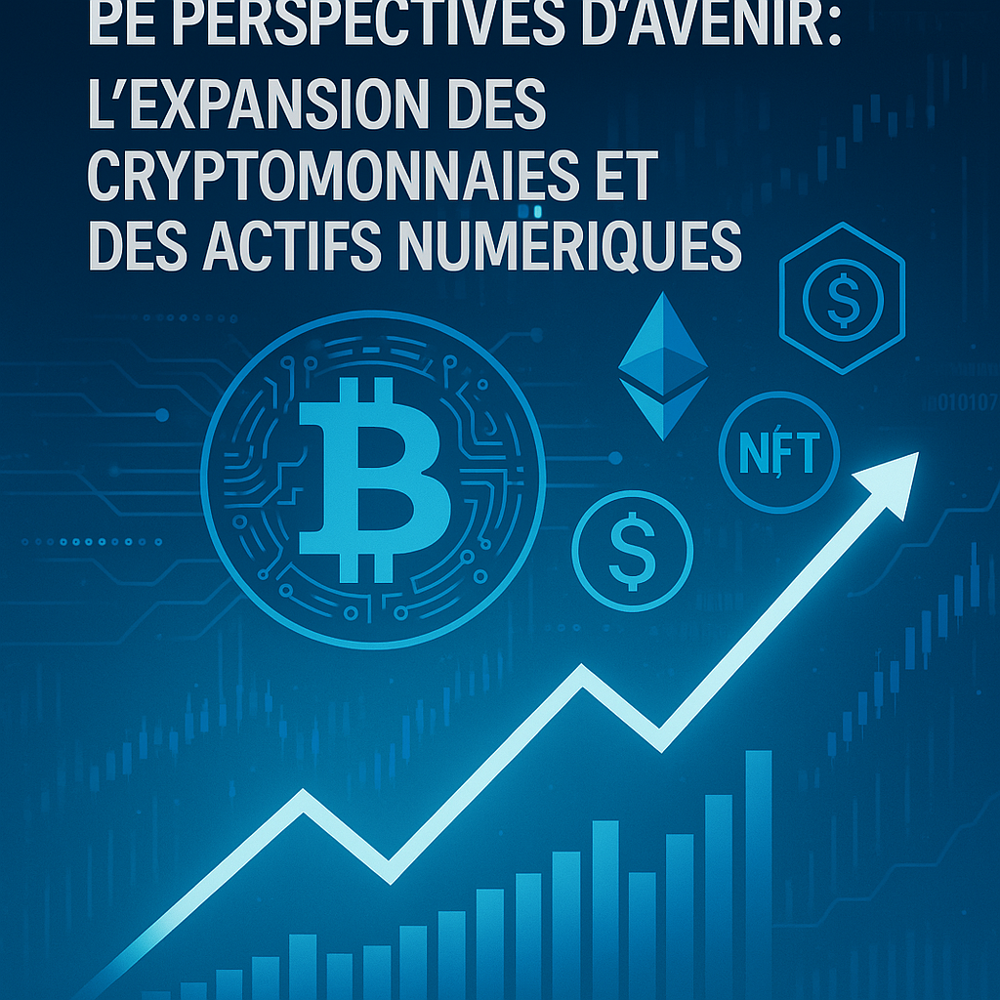

Les Transactions Financières en Ligne : État des Lieux et Perspectives
Introduction
L’essor d’Internet et des technologies numériques a profondément transformé le paysage économique mondial. Les transactions financières en ligne, qu’il s’agisse d’achats, de transferts d’argent, d’investissements ou de trading, se sont imposées comme des outils incontournables dans notre quotidien. Cette transformation ne se limite pas seulement à la facilité d’accès, mais s’accompagne d’une évolution des méthodes de paiement, d’un accroissement des volumes transactionnels et d’une révolution des technologies sous-jacentes. Dans cet article, nous explorerons en profondeur l’évolution historique des transactions en ligne, les données chiffrées qui illustrent leur croissance, les innovations technologiques qui les soutiennent, ainsi que les défis réglementaires et les perspectives d’avenir. Nous analyserons également des études de cas et des exemples concrets pour illustrer comment ces évolutions redéfinissent le secteur financier.
1. Historique et Évolution de la Finance Numérique
1.1. Les Premiers Pas de la Finance en Ligne
L’histoire des transactions financières sur Internet débute dans les années 1990, avec l’émergence des premières banques en ligne. Dès cette période, l’idée de gérer ses finances à distance devient une réalité. En 1994, la première transaction sécurisée par carte de crédit sur Internet ouvre la voie à un commerce électronique naissant, tandis que l’introduction du protocole SSL (Secure Socket Layer) garantit la confidentialité et la sécurité des échanges. Ce tournant technologique permet alors aux consommateurs de se familiariser avec un nouveau mode d’interaction financière, marquant le début d’une ère où la confiance se construit progressivement grâce à l’innovation technologique.
1.2. Les Pionniers du Secteur
Parmi les pionniers, des entreprises telles qu’E-Trade et Charles Schwab jouent un rôle crucial. E-Trade, lancée en 1982, permet aux investisseurs particuliers de passer des ordres en ligne, révolutionnant ainsi le secteur du courtage. Ces premières initiatives démontrent qu’en combinant accessibilité et sécurité, il est possible de rendre les marchés financiers plus démocratiques. Ces avancées posent les bases d’un secteur qui, en quelques décennies, va se transformer radicalement pour devenir l’un des piliers de l’économie numérique.
1.3. L’Évolution des Méthodes de Paiement
Au fil des années, les moyens de paiement se diversifient pour répondre aux besoins croissants d’un public de plus en plus connecté. Parmi ces méthodes, on distingue :
- Les cartes bancaires : Dès le début, les cartes de crédit et de débit constituent le moyen privilégié pour effectuer des achats en ligne. Leur popularité ne cesse de croître, avec des statistiques indiquant que, par exemple, environ 40 % des transactions en ligne aux États-Unis en 2020 se faisaient via des cartes bancaires.
- Les portefeuilles électroniques : L’apparition de solutions telles que PayPal, Skrill ou Apple Pay offre une alternative pratique en permettant aux utilisateurs d’effectuer des transactions sans avoir à ressaisir leurs informations bancaires à chaque opération. En 2021, PayPal comptait plus de 400 millions de comptes actifs dans le monde, attestant de l’adhésion massive à ce mode de paiement.
- Les cryptomonnaies : L’introduction du Bitcoin en 2009 révolutionne le secteur financier en proposant des transactions décentralisées et souvent anonymes. En 2021, le volume des transactions en Bitcoin a dépassé 2 trillions de dollars, soulignant la montée en puissance de ces monnaies virtuelles qui s’imposent progressivement comme un moyen alternatif de paiement.
1.4. La Croissance Exponentielle du Commerce Électronique
Le commerce électronique connaît une expansion spectaculaire au cours des deux dernières décennies. Selon diverses études, le volume mondial des transactions de commerce électronique s’élevait à environ 4,28 trillions de dollars en 2020 et devrait atteindre près de 6,39 trillions de dollars d’ici 2024. Cette croissance s’explique notamment par l’augmentation de l’accessibilité à Internet, l’adoption massive des smartphones et l’évolution des comportements d’achat qui se tournent de plus en plus vers des plateformes en ligne.
1.4.1. Répercussions sur les Commerçants Traditionnels
Face à cette révolution numérique, les détaillants traditionnels se voient contraints de s’adapter. De nombreux magasins investissent dans la création de plateformes de vente en ligne ou collaborent avec des géants du e-commerce tels qu’Amazon afin de rester compétitifs. Des entreprises comme Walmart, par exemple, ont développé leurs infrastructures numériques pour répondre à la demande croissante et rivaliser avec les acteurs purement en ligne.
2. Chiffres Clés et Tendances du Marché
2.1. Le Volume Global des Transactions
Des études récentes, telles que celles de Statista, montrent que le volume total des transactions en ligne a atteint des chiffres colossaux. En 2020, le commerce électronique mondial s’élevait à environ 4,28 trillions de dollars. Cette somme englobe non seulement les achats de biens physiques, mais également les services financiers et les transferts d’argent. Par ailleurs, la répartition géographique révèle que la région Asie-Pacifique, dominée par la Chine, représente près de 60 % du total des transactions mondiales. En Chine, par exemple, les ventes en ligne ont généré plus de 2 trillions de dollars en 2020, illustrant le rôle central de ce marché dans l’économie numérique mondiale.
2.2. La Croissance des Paiements Numériques
Le rapport de Worldpay indique que les paiements numériques représentent désormais plus de 50 % de l’ensemble des transactions mondiales. Ce phénomène est principalement attribuable à l’essor des smartphones et à l’amélioration de l’accessibilité à Internet. La pandémie de COVID-19 a également joué un rôle déterminant en accélérant la transition vers le numérique. En effet, pendant la crise sanitaire, la part des ventes en ligne dans le total des ventes au détail a bondi de 20 % à plus de 30 % dans de nombreux pays.
2.3. Analyse Démographique et Comportements d’Achat
Les comportements d’achat en ligne varient significativement selon les tranches d’âge. Les jeunes générations, notamment les milléniaux et la Génération Z, adoptent massivement les paiements mobiles et en ligne, préférant ces méthodes aux paiements en espèces ou par carte traditionnelle. Une étude menée par Deloitte révèle que près de 80 % des milléniaux privilégient l’utilisation de leur smartphone pour effectuer des transactions financières. Par ailleurs, le phénomène du « social commerce » se développe, avec des plateformes sociales comme Instagram et Facebook qui intègrent des fonctionnalités d’achat direct, offrant aux marques une opportunité de toucher un public plus jeune et connecté.
2.4. Impact de la Pandémie sur les Tendances
La crise sanitaire a eu pour effet d’accélérer la transition numérique dans le secteur financier. La pandémie a non seulement poussé les consommateurs à adopter les transactions en ligne pour limiter les contacts physiques, mais elle a également entraîné une augmentation significative des investissements dans les technologies de paiement. Selon McKinsey, la part des transactions en ligne dans les ventes au détail a connu une augmentation substantielle pendant la pandémie, une tendance qui s’est maintenue même après la levée des restrictions sanitaires.
3. Les Différents Types de Transactions Financières en Ligne
3.1. Achats en Ligne
Les plateformes de e-commerce, telles qu’Amazon et Alibaba, dominent le marché des achats en ligne. En 2021, par exemple, Amazon a généré plus de 469 milliards de dollars de revenus, dont une part considérable provient des ventes réalisées via Internet. Les achats en ligne se déclinent en de nombreuses catégories, notamment la mode, l’électronique, l’épicerie et même des produits d’occasion. Le recours croissant aux achats via mobile, qui représente près de 73 % des ventes aux États-Unis, témoigne de la montée en puissance des transactions réalisées sur smartphone.
3.1.1. Catégories de Produits et Services
Certaines catégories se distinguent particulièrement :
- L’électronique et les gadgets : L’essor des technologies a entraîné une demande accrue pour les produits électroniques, notamment les smartphones, tablettes et accessoires connectés.
- La mode et l’habillement : La mode en ligne connaît une croissance rapide, avec des marques qui adaptent leurs stratégies marketing pour toucher des consommateurs digitalisés.
- L’épicerie et les produits alimentaires : La pandémie a transformé les habitudes de consommation, avec une augmentation spectaculaire des achats d’épicerie en ligne, parfois de plus de 100 % dans certains marchés.
3.2. Transferts d’Argent
Les transferts d’argent internationaux et domestiques sont facilitée par des services spécialisés tels que Western Union et Wise (anciennement TransferWise). Ces plateformes permettent de réaliser des transferts avec des frais réduits par rapport aux banques traditionnelles, et elles se distinguent par leur rapidité et leur accessibilité via des applications mobiles. Par exemple, en 2020, Wise a traité plus de 5 milliards de dollars en transferts internationaux, mettant en lumière l’importance croissante des paiements mobiles pour les échanges de fonds entre particuliers.
3.2.1. L’Impact des Technologies Mobiles sur les Transferts
Les applications comme Venmo, Cash App et d’autres permettent désormais d’envoyer et de recevoir de l’argent en temps réel. Ces solutions, simples d’utilisation et accessibles à tous, contribuent à démocratiser les transferts d’argent, en particulier parmi les jeunes générations qui privilégient la rapidité et la simplicité.
3.3. Investissements et Trading en Ligne
Les plateformes de trading en ligne, telles que Robinhood et eToro, ont révolutionné l’accès aux marchés financiers. En 2020, Robinhood a enregistré un volume de transactions dépassant les 100 milliards de dollars, attirant particulièrement les jeunes investisseurs grâce à ses commissions réduites voire nulles. Ces plateformes démocratisent l’investissement en permettant à un public plus large d’accéder aux marchés boursiers sans nécessiter un capital important.
3.3.1. La Démocratisation du Trading
Le trading en ligne a rendu l’investissement plus accessible en éliminant les barrières traditionnelles. Grâce à des interfaces conviviales et des outils d’analyse automatisés, même les investisseurs novices peuvent se lancer dans le trading avec des connaissances financières minimales.
3.4. Les Prêts Peer-to-Peer (P2P)
Le secteur des prêts P2P se développe rapidement, permettant à des particuliers d’emprunter directement auprès d’autres particuliers, contournant ainsi les institutions financières traditionnelles. Des plateformes comme LendingClub et Prosper offrent des taux d’intérêt compétitifs et facilitent l’accès au crédit pour ceux qui sont traditionnellement moins bien desservis par le système bancaire.
3.4.1. Croissance et Impact du Marché P2P
Le marché des prêts P2P a atteint environ 67 milliards de dollars dans le monde en 2020, d’après Research and Markets. Cette croissance s’explique par la demande croissante d’options de financement alternatives, en particulier dans un contexte où les taux d’intérêt restent bas et où les consommateurs recherchent des solutions de crédit plus flexibles.
3.5. Les Nouveaux Modèles de Financement : BNPL et Crédit Fractionné
Parmi les innovations récentes, le paiement fractionné, ou "Buy Now, Pay Later" (BNPL), se distingue particulièrement. Ce mode de paiement permet aux consommateurs d’étaler le coût d’un achat sur plusieurs mois sans frais supplémentaires s’il est réglé dans les délais. En 2024, selon des études, 68 % des Européens utilisent le BNPL, et ce mode de financement est particulièrement populaire en période d’inflation, offrant une solution attractive pour gérer le pouvoir d’achat.
3.5.1. Les Enjeux du BNPL
Si le BNPL présente de nombreux avantages, il fait également l’objet d’une surveillance accrue par les autorités. La directive européenne sur le crédit à la consommation, qui devrait s’appliquer dès 2026, imposera des obligations supplémentaires aux prestataires de BNPL afin de limiter les risques de surendettement des ménages.
4. Les Technologies Sous-Jacentes aux Transactions Financières en Ligne
4.1. La Blockchain et ses Applications
La technologie blockchain est sans doute l’une des innovations les plus marquantes du secteur financier. Elle permet d’effectuer des transactions de manière sécurisée et transparente, sans l’intervention d’un intermédiaire centralisé. La blockchain trouve des applications variées :
- Les cryptomonnaies : Le Bitcoin, ainsi que d’autres monnaies numériques, repose sur cette technologie pour garantir la sécurité et l’anonymat des transactions.
- Les contrats intelligents : Ces contrats automatisés s’exécutent dès que les conditions prédéfinies sont remplies, facilitant ainsi des opérations financières complexes sans recours aux intermédiaires.
Des entreprises telles que Ripple exploitent la blockchain pour faciliter les paiements transfrontaliers rapides et peu coûteux, tandis que d’autres secteurs explorent son utilisation pour améliorer la traçabilité dans la chaîne d’approvisionnement.
4.2. La Sécurité des Transactions
La sécurité est un enjeu majeur dans les transactions financières en ligne. Pour protéger les données sensibles et prévenir la fraude, plusieurs technologies sont mises en œuvre :
- Le cryptage avancé : Utilisé pour sécuriser les échanges de données entre le client et le serveur, le cryptage empêche toute interception malveillante.
- L’authentification à deux facteurs (2FA) : Cette méthode ajoute une couche supplémentaire de sécurité en demandant une vérification supplémentaire (généralement via un code envoyé par SMS ou généré par une application) lors de l’accès aux comptes.
Les cyberattaques devenant de plus en plus sophistiquées, les entreprises investissent massivement dans la cybersécurité afin de protéger leurs infrastructures et de garantir la confiance des utilisateurs.
4.3. L’Intelligence Artificielle (IA) et le Big Data
L’IA joue un rôle essentiel dans l’analyse des données et la détection des fraudes. Grâce à l’apprentissage automatique, les algorithmes d’IA peuvent analyser d’énormes volumes de données pour repérer des schémas suspects ou identifier des comportements anormaux.
- Détection des fraudes : Les systèmes basés sur l’IA détectent en temps réel des anomalies dans les transactions, ce qui permet de bloquer rapidement des opérations frauduleuses.
- Optimisation de l’expérience client : Les chatbots et assistants virtuels, alimentés par l’IA, offrent un service client personnalisé et automatisé, réduisant ainsi les délais de réponse et améliorant la satisfaction client.
L’IA permet également d’améliorer l’analyse prédictive, en anticipant les tendances du marché et en fournissant des recommandations personnalisées pour optimiser les stratégies financières.
4.4. L’Open Banking et les APIs
L’open banking est une tendance forte qui consiste à ouvrir les systèmes bancaires à des tiers via des interfaces de programmation (APIs). Cette approche favorise l’innovation en permettant à des fintech et à d’autres acteurs de développer de nouveaux services financiers en s’appuyant sur les données bancaires.
- Amélioration de l’accessibilité : Les APIs ouvertes facilitent la création d’applications qui regroupent plusieurs services financiers en une seule interface, offrant ainsi une meilleure expérience utilisateur.
- Concurrence et innovation : En rendant les données bancaires accessibles, l’open banking encourage la concurrence entre les banques traditionnelles et les nouveaux entrants, ce qui stimule l’innovation et conduit à la création de produits financiers plus performants.
5. Les Régulations et Normes du Secteur Financier en Ligne
5.1. Le Cadre Réglementaire Global
La régulation des transactions financières en ligne est complexe et varie d’un pays à l’autre. Toutefois, plusieurs normes internationales visent à protéger les consommateurs et à assurer la stabilité du système financier mondial.
- La Directive PSD2 en Europe : La Directive sur les services de paiement (PSD2) impose aux banques d’ouvrir leurs systèmes aux tiers, favorisant ainsi la concurrence et l’innovation. Cette directive renforce également les mesures de sécurité, notamment via l’authentification forte des clients.
- La Réglementation sur la Protection des Données (RGPD) : Le RGPD protège les données personnelles des utilisateurs et impose des obligations strictes aux entreprises qui traitent ces données, garantissant ainsi la confidentialité et la transparence des échanges.
- Les Normes Internationales de Sécurité (PCI-DSS) : Ces normes, définies par le Conseil des normes de sécurité PCI, encadrent la protection des informations de carte de paiement et obligent les entreprises à mettre en place des mesures de sécurité robustes.
5.2. La Protection des Consommateurs et la Lutte contre la Fraude
Les régulations visent également à protéger les consommateurs contre la fraude et les abus. Les autorités financières mettent en place plusieurs mesures pour sensibiliser les usagers et renforcer la sécurité des transactions.
- Campagnes de sensibilisation : Les gouvernements et les institutions financières lancent régulièrement des campagnes d’information pour aider les consommateurs à reconnaître les risques de fraude et à adopter des comportements sécurisés en ligne.
- Contrôles et audits réguliers : Les organismes de régulation effectuent des audits et des contrôles réguliers afin de s’assurer que les entreprises respectent les normes de sécurité et les obligations en matière de protection des données.
5.3. Les Défis Réglementaires Face aux Innovations Technologiques
L’évolution rapide des technologies financières pose des défis importants aux régulateurs. La multiplication des modes de paiement numériques, l’émergence des cryptomonnaies et des fintech, ainsi que l’essor de l’open banking, nécessitent une adaptation constante des cadres réglementaires.
- La Taxe sur les Transactions Financières (TTF) : Certaines initiatives, comme la TTF mise en place en France après la crise financière de 2008, visent à réguler les transactions financières et à financer la solidarité internationale. Des débats persistent quant à l’élargissement de cette taxe aux transactions intra-journalières et aux produits dérivés.
- L’encadrement du BNPL : Avec la montée du paiement fractionné, les autorités européennes envisagent de l’assimiler à un crédit à la consommation, imposant ainsi des obligations en matière d’information et de vérification de la solvabilité des clients.
- La Régulation des Cryptomonnaies : La nature décentralisée des cryptomonnaies rend leur régulation complexe. Les gouvernements cherchent à concilier innovation et sécurité, en instaurant des régulations visant à prévenir le blanchiment d’argent et à protéger les investisseurs, sans freiner le développement de ce secteur.
6. Tendances Futures et Perspectives d’Avenir

6.1. L’Expansion des Cryptomonnaies et des Actifs Numériques
Les cryptomonnaies continuent d’attirer l’attention tant du grand public que des investisseurs institutionnels. Malgré leur volatilité, elles représentent une classe d’actifs en pleine expansion.
- Adoption par les entreprises : De plus en plus d’entreprises commencent à accepter les cryptomonnaies comme moyen de paiement, élargissant ainsi leur clientèle et réduisant les coûts liés aux transactions internationales.
- Régulation et stabilité : Les régulateurs du monde entier travaillent à instaurer des cadres pour encadrer l’utilisation des cryptomonnaies, avec des initiatives visant à augmenter la transparence et à protéger les consommateurs.
- Innovation dans la finance décentralisée (DeFi) : La DeFi, qui repose sur des protocoles blockchain pour offrir des services financiers sans intermédiaire, continue de se développer. Ces plateformes proposent des solutions de prêt, d’investissement et d’épargne innovantes, favorisant une finance plus inclusive.
6.2. L’Intelligence Artificielle et la Personnalisation des Services Financiers
L’IA joue un rôle de plus en plus déterminant dans la transformation des services financiers. Elle permet non seulement de détecter la fraude, mais aussi d’offrir des services personnalisés et des conseils financiers adaptés aux besoins de chaque utilisateur.
- Chatbots et assistants virtuels : Ces outils, désormais intégrés aux plateformes bancaires, offrent un service client disponible 24h/24, capable de répondre aux questions courantes et de guider les clients dans leurs opérations.
- Analyse prédictive : L’IA permet d’anticiper les comportements d’achat et d’investissement en analysant les données transactionnelles, ce qui aide les banques à optimiser leurs offres et à mieux gérer les risques.
- Personnalisation des produits : Grâce aux algorithmes d’IA, il est désormais possible de proposer des produits financiers sur mesure, allant des recommandations d’investissement aux solutions de crédit adaptées au profil de chaque consommateur.
6.3. Le Développement des Paiements Instantanés et Mobile
Le paiement instantané se développe rapidement, avec des solutions telles que Pix au Brésil qui enregistrent des hausses spectaculaires en période de forte demande (par exemple, lors du Black Friday).
- Croissance des paiements mobiles : L’essor des smartphones a favorisé l’adoption des paiements mobiles, avec des applications comme Apple Pay, Samsung Pay et d’autres qui offrent une expérience utilisateur fluide et sécurisée. Les données récentes montrent qu’en France, près de 10,1 % des paiements de proximité sont effectués via des solutions mobiles.
- Intégration avec l’open banking : L’essor de l’open banking permet une interconnexion accrue entre les banques traditionnelles et les fintech, facilitant ainsi le développement de nouveaux services de paiement qui allient rapidité, sécurité et transparence.
- Évolution des cartes virtuelles : Les banques en ligne et néobanques proposent désormais des cartes virtuelles délivrées instantanément, permettant aux clients d’effectuer des paiements dès l’ouverture de leur compte, sans attendre l’envoi d’une carte physique.
6.4. L’Émergence des Modèles de Financement Alternatifs
Outre le BNPL, d’autres modèles de financement alternatifs émergent pour répondre aux besoins des consommateurs modernes.
- Prêts P2P et Financement Participatif : Le prêt entre particuliers et le financement participatif offrent des alternatives aux prêts bancaires traditionnels. Ces modèles favorisent l’inclusion financière en permettant à des personnes qui n’ont pas accès aux crédits conventionnels d’obtenir des financements à des taux compétitifs.
- Location Longue Durée (LLD) : Dans le secteur automobile, la location longue durée se développe pour permettre aux consommateurs de bénéficier de véhicules sans en devenir propriétaires, réduisant ainsi l’investissement initial nécessaire et offrant plus de flexibilité.
- Finance Collaborative et Microcrédit : La finance collaborative, qui repose sur des plateformes de prêt entre particuliers ou sur des systèmes d’épargne rotative (ROSCAs), permet d’inclure dans le système financier des populations traditionnellement exclues. Ces initiatives, particulièrement présentes dans les pays en développement, favorisent l’inclusion et stimulent la croissance économique locale.
6.5. Perspectives Régionales et Impact International
Les tendances observées dans les transactions financières en ligne varient selon les régions.
- Asie-Pacifique : Cette région, notamment la Chine avec ses géants technologiques comme Alibaba, WeChat Pay et Alipay, demeure le moteur du commerce électronique mondial. L’adoption massive des paiements mobiles et la montée des cryptomonnaies y créent un écosystème dynamique et innovant.
- Europe : En Europe, l’essor des banques en ligne et des fintech est encouragé par des régulations favorables telles que la PSD2. Cependant, la fragmentation des marchés et la diversité des normes nationales constituent encore des défis majeurs pour l’unification des services financiers.
- Amérique du Nord : Aux États-Unis, la digitalisation des transactions est soutenue par un marché de capitaux robuste et une forte adoption des technologies de paiement. La croissance des plateformes de trading en ligne et des cryptomonnaies y est particulièrement notable.
- Afrique et Marchés Émergents : Dans les pays en développement, l’utilisation croissante des téléphones mobiles favorise l’adoption des services financiers numériques, même dans des régions où l’accès aux infrastructures bancaires traditionnelles est limité. Des initiatives régionales, comme celles de l’UEMOA en Afrique de l’Ouest, montrent comment les technologies numériques peuvent favoriser l’inclusion financière à grande échelle.
7. Études de Cas et Retours d’Expérience
7.1. Analyse de la Plateforme PayPal
Prenons l’exemple de PayPal, l’un des pionniers des portefeuilles électroniques. En 2020, PayPal a traité plus de 936 milliards de dollars de paiements et comptait une base d’utilisateurs de plus de 400 millions de comptes actifs dans le monde.
- Innovations Récentes : PayPal a récemment lancé le service « PayPal Checkout » qui permet aux utilisateurs d’effectuer leurs achats en ligne en un seul clic, simplifiant ainsi l’expérience d’achat et augmentant la conversion pour les commerçants.
- Impact sur l’Inclusion Financière : En offrant une solution simple et sécurisée pour les transactions en ligne, PayPal a contribué à démocratiser l’accès aux services financiers, notamment dans les pays en développement où l’accès aux banques traditionnelles peut être limité.
7.2. L’Impact de la Pandémie sur les Comportements d’Achat
La pandémie de COVID-19 a accéléré la transition vers les transactions en ligne. De nombreux consommateurs, contraints de limiter leurs déplacements, se sont tournés vers le commerce électronique pour répondre à leurs besoins quotidiens.
- Transformation des Habitudes : Après la pandémie, une partie significative des consommateurs continue de privilégier les achats en ligne, même avec la réouverture progressive des magasins physiques. Cette évolution comportementale est notamment due à la praticité, à la rapidité et à la sécurité des transactions numériques.
- Perspectives à Long Terme : Les entreprises investissent désormais dans la digitalisation de leurs services, anticipant une permanence de ces comportements post-pandémiques. Les détaillants traditionnels sont ainsi contraints d’intégrer des solutions hybrides alliant présence physique et commerce en ligne.
7.3. Comparaison : Venmo vs. Cash App
Venmo et Cash App sont deux applications populaires aux États-Unis permettant d’effectuer des transferts d’argent instantanés entre particuliers.
- Fonctionnalités Distinctives : Venmo se distingue par son aspect social, intégrant un fil d’actualités où les transactions peuvent être partagées (de manière anonyme ou publique) avec les contacts. Cash App, quant à elle, offre des fonctionnalités supplémentaires telles que l’achat de Bitcoin directement depuis l’application, ce qui attire une clientèle variée.
- Adoption et Sécurité : Les deux applications misent sur la simplicité et la sécurité des transferts, répondant à une demande croissante pour des solutions de paiement rapides et sans frais élevés.
7.4. L’Exemple des Fintech en Europe
En Europe, la directive PSD2 a joué un rôle majeur dans la promotion de l’open banking et de l’innovation dans le secteur financier.
- Cas d’Utilisation : Plusieurs fintech européennes ont émergé en proposant des services innovants, allant de la gestion de patrimoine en ligne à des solutions de paiement mobile intégrées. Ces entreprises profitent d’un environnement réglementaire favorable qui encourage la concurrence et l’innovation.
- Défis Réglementaires : Malgré ces avancées, la fragmentation du marché européen et la diversité des législations nationales restent des obstacles à une harmonisation totale des services financiers. Les initiatives visant à créer un régulateur boursier unique et à renforcer la coopération entre les pays membres sont donc essentielles pour poursuivre cette dynamique.
8. Innovations et Impact des Nouvelles Technologies

8.1. L’Intégration de l’IA dans les Services Financiers
L’intelligence artificielle, avec ses applications variées, transforme non seulement la détection de la fraude, mais aussi l’expérience client et la gestion des opérations.
- Optimisation des Processus Internes : Les banques utilisent l’IA pour automatiser des tâches administratives, réduire les coûts opérationnels et améliorer l’efficacité des processus internes.
- Chatbots et Assistance Virtuelle : Des assistants virtuels basés sur l’IA sont désormais capables de répondre aux questions des clients en temps réel, offrant une assistance 24h/24 et 7j/7, et améliorant ainsi la satisfaction client.
- Analyse Prédictive et Personnalisation : Les algorithmes d’IA analysent les données transactionnelles pour identifier des tendances et recommander des produits financiers adaptés aux besoins spécifiques de chaque client.
8.2. La Révolution du Mobile et des Paiements Instantanés
La montée en puissance du mobile a transformé les habitudes de paiement.
- Cartes Virtuelles et Portefeuilles Électroniques : De nombreuses banques proposent désormais des cartes virtuelles, disponibles dès l’ouverture de compte, permettant aux clients de commencer à effectuer des transactions sans attendre la livraison d’une carte physique.
- Virements Instantanés : Le virement instantané, qui permet de transférer des fonds en quelques secondes, est en pleine expansion. La réglementation européenne impose d’ailleurs que ces virements deviennent gratuits dans les prochaines années, favorisant ainsi leur adoption.
- Applications de Paiement : Des solutions telles que Apple Pay, Samsung Pay et Google Pay facilitent les paiements en magasin comme en ligne, renforçant l’accessibilité et la rapidité des transactions.
8.3. Le Rôle des API et de l’Open Banking
L’open banking, par le biais des APIs, permet aux banques de partager leurs données avec des tiers autorisés, stimulant ainsi l’innovation.
- Création de Nouveaux Services : Grâce aux APIs, des fintech peuvent développer des applications innovantes qui regroupent plusieurs services financiers en une seule interface, améliorant ainsi l’expérience utilisateur.
- Sécurité et Transparence : L’open banking renforce la transparence des transactions financières en permettant aux clients de contrôler et de suivre l’utilisation de leurs données, tout en garantissant des niveaux de sécurité élevés.
9. Les Défis et Opportunités de la Digitalisation Financière
9.1. Enjeux de Sécurité et de Cybercriminalité
Avec la croissance exponentielle des transactions en ligne, la sécurité des données et la prévention de la fraude demeurent des préoccupations majeures.
- Techniques de Cyberattaque : Les cyberattaques se complexifient, allant du phishing aux attaques par ransomware, obligeant les institutions financières à renforcer leurs défenses et à investir dans des technologies de sécurité avancées.
- Formation et Sensibilisation : La formation des employés et la sensibilisation des consommateurs aux risques liés à la fraude en ligne sont essentielles pour limiter les incidents.
- Collaborations Publiques-Privées : Les partenariats entre les gouvernements, les banques et les entreprises technologiques jouent un rôle crucial dans l’élaboration de stratégies de cybersécurité efficaces et dans la lutte contre la cybercriminalité.
9.2. Adaptation Réglementaire et Coordination Internationale
La rapidité des innovations technologiques impose aux régulateurs de revoir constamment leurs cadres réglementaires.
- Harmonisation des Normes : Dans un monde de plus en plus interconnecté, il devient impératif d’harmoniser les réglementations entre les différents pays pour faciliter les transactions transfrontalières et réduire les coûts de conformité pour les entreprises.
- Régulation des Cryptomonnaies : La nature décentralisée des cryptomonnaies pose des défis spécifiques en matière de régulation. Les gouvernements doivent trouver un équilibre entre encourager l’innovation et protéger les consommateurs contre les risques associés à ces actifs volatils.
- Protection des Données Personnelles : Avec l’essor des services financiers numériques, la protection des données personnelles devient une priorité absolue. Le RGPD et d’autres cadres similaires jouent un rôle essentiel pour garantir la confidentialité et la sécurité des informations sensibles.
9.3. L’Inclusion Financière dans un Monde Numérique
L’un des objectifs majeurs de la digitalisation financière est d’accroître l’inclusion financière à l’échelle mondiale.
- Accès aux Services Financiers : Dans de nombreux pays en développement, l’accès aux services bancaires traditionnels est limité. Les technologies mobiles et les solutions de paiement numérique permettent à une population plus large d’accéder à des services financiers de base, favorisant ainsi la participation à l’économie formelle.
- Initiatives Régionales et Projets Collaboratifs :Des initiatives telles que celles menées par l’Union économique et monétaire ouest-africaine (UEMOA) démontrent comment la digitalisation peut favoriser l’inclusion financière, en augmentant le nombre de transactions et en réduisant les coûts pour les utilisateurs.
10. Études de Cas Internationaux et Retours d’Expérience
10.1. Le Système Pix au Brésil
Le système de paiement instantané Pix, lancé par la Banque Centrale du Brésil il y a quatre ans, est un exemple probant d’innovation dans le domaine des paiements numériques.
- Adoption Massive : Lors du Black Friday 2024, le système Pix a connu une augmentation spectaculaire avec une hausse de 120,7 % de la valeur des transactions par rapport à l’année précédente. Ce succès est attribué à la facilité d’utilisation de Pix et à l’impact des promotions pendant cette période.
- Perspectives de Croissance : Les prévisions de Febraban indiquent que le volume des transactions via Pix devrait atteindre des niveaux record, renforçant ainsi la position du Brésil comme leader en matière de paiements instantanés en Amérique latine.
10.2. L’Impact des Fintech sur l’Inclusion Bancaire en Afrique
Dans plusieurs pays africains, l’utilisation des téléphones mobiles a permis de contourner les lacunes des infrastructures bancaires traditionnelles.
- Cas de l’UEMOA : Dans l’Union économique et monétaire ouest-africaine, le rapport annuel sur les services financiers numériques montre que le nombre d’opérations journalières a augmenté de manière significative. Ces progrès contribuent à une meilleure inclusion financière, en permettant aux populations non bancarisées d’accéder à des services de paiement et de transfert d’argent.
- Initiatives Locales : Des plateformes locales de paiement mobile ont vu le jour, facilitant l’accès aux services financiers et favorisant le développement économique dans des régions où l’accès aux banques physiques est limité.
10.3. L’Essor du BNPL en Europe et en Amérique du Nord
Le modèle « Buy Now, Pay Later » connaît une adoption rapide, notamment en Europe et aux États-Unis.
- Avantages pour les Consommateurs : Ce système permet aux consommateurs d’étaler le coût de leurs achats, améliorant ainsi leur capacité d’achat en période de contraintes budgétaires.
- Risques et Régulation : Cependant, l’essor du BNPL suscite des inquiétudes en matière de surendettement. Les régulateurs européens envisagent dès 2026 d’assimiler le BNPL à un crédit à la consommation, imposant des vérifications de solvabilité plus strictes et la fourniture d’échéanciers aux clients.
10.4. L’Impact des Néobanques sur le Secteur Bancaire Traditionnel
Les néobanques telles que Revolut, N26 et BforBank redéfinissent l’expérience bancaire.
- Digitalisation Totale : Ces banques proposent des services 100 % en ligne, avec une ouverture de compte instantanée et des cartes virtuelles disponibles dès l’inscription.
- Expérience Utilisateur : Leur interface intuitive et l’intégration de technologies telles que la reconnaissance faciale pour l’authentification offrent une expérience utilisateur simplifiée et sécurisée.
- Concurrence et Innovation : L’émergence des néobanques oblige les banques traditionnelles à accélérer leur transformation digitale afin de rester compétitives. Cela conduit à une convergence progressive des modèles de service, où la rapidité, la sécurité et la personnalisation deviennent les maîtres-mots.
11. Innovations Technologiques et Transformations Sectorielles
11.1. La Transformation par la Blockchain et les Cryptomonnaies
La blockchain continue de transformer les transactions financières en offrant une alternative décentralisée et transparente aux systèmes centralisés traditionnels.
- Sécurité et Transparence : La nature immuable de la blockchain assure que chaque transaction est enregistrée de manière sécurisée et accessible, ce qui renforce la confiance des utilisateurs dans les systèmes financiers numériques.
- Applications dans Divers Secteurs : Outre les cryptomonnaies, la blockchain est utilisée pour créer des contrats intelligents et pour améliorer la traçabilité des produits dans la chaîne logistique. Ces applications étendent son impact bien au-delà du secteur financier.
11.2. L’Utilisation Croissante du Big Data
Les données massives (Big Data) jouent un rôle fondamental dans l’optimisation des services financiers en ligne.
- Analyse des Comportements : Les institutions financières utilisent le Big Data pour analyser en profondeur les habitudes de consommation et pour anticiper les besoins des clients, offrant ainsi des services plus personnalisés.
- Optimisation des Risques : Grâce aux analyses prédictives, les banques peuvent mieux évaluer les risques de crédit et ajuster leurs offres en conséquence, ce qui contribue à une meilleure gestion globale des risques.
11.3. L’Impact de l’Open Banking sur l’Écosystème Financier
L’open banking révolutionne le secteur en permettant un échange de données sécurisé entre les banques et les fintech via des APIs ouvertes.
- Création de Nouveaux Produits : Cette approche favorise l’émergence de nouveaux produits financiers intégrés, où les services bancaires traditionnels se combinent avec des solutions innovantes issues des fintech.
- Concurrence et Coopération : En facilitant la collaboration entre différents acteurs, l’open banking stimule la concurrence et encourage les banques à adopter de nouvelles technologies pour améliorer leur offre et réduire les coûts.
12. Les Défis à Venir et les Axes d’Amélioration
12.1. Renforcer la Sécurité et la Confiance
Malgré les avancées technologiques, la sécurité demeure un enjeu central dans le secteur des transactions financières en ligne.
- Cybersécurité et Protection des Données : Les institutions financières doivent constamment investir dans des technologies de sécurité pour contrer les cyberattaques, qui se font de plus en plus sophistiquées. La formation des employés et la sensibilisation des consommateurs sont également essentielles pour réduire les risques.
- Amélioration des Protocoles d’Authentification : L’authentification à deux facteurs, le cryptage avancé et l’utilisation de la biométrie sont autant de solutions mises en œuvre pour garantir la sécurité des transactions. Des initiatives récentes, telles que l’obligation de certification d’authenticité pour les appels téléphoniques dans la lutte contre la fraude au faux conseiller bancaire, illustrent cette dynamique.
12.2. Adapter les Régulations aux Innovations
Le rythme rapide des innovations technologiques impose aux régulateurs de revoir régulièrement leurs cadres juridiques.
- Harmonisation Réglementaire Internationale : Dans un contexte globalisé, l’harmonisation des normes entre les pays devient indispensable pour faciliter les transactions transfrontalières et réduire les coûts pour les entreprises.
- Encadrement des Nouveaux Modes de Paiement : Des dispositifs tels que la directive PSD2 et le RGPD doivent être continuellement mis à jour pour accompagner les évolutions des technologies financières, tout en assurant la protection des consommateurs et la transparence des échanges.
- Surveillance des Cryptomonnaies et des Fintech : Les gouvernements et les autorités de régulation doivent développer des mécanismes adaptés pour surveiller les activités liées aux cryptomonnaies et aux fintech, tout en encourageant l’innovation et en protégeant les investisseurs.
12.3. Favoriser l’Inclusion Financière et la Croissance Durable
L’un des principaux défis de la digitalisation financière est d’assurer que ses bénéfices soient partagés équitablement par l’ensemble de la population.
- Accès aux Services Bancaires : Dans les régions où l’accès aux services bancaires traditionnels est limité, les solutions numériques offrent une opportunité unique d’inclusion financière. Les initiatives de paiement mobile dans les pays en développement en sont un exemple probant.
- Soutien aux PME et aux Entreprises Innovantes : La facilitation des transactions financières via des plateformes en ligne permet aux petites et moyennes entreprises (PME) d’accéder à des financements et à des marchés plus larges, stimulant ainsi la croissance économique.
- Développement de Projets Durables : La numérisation financière peut également être orientée vers des projets à long terme, notamment dans le cadre de la transition verte. L’investissement dans des infrastructures numériques et la réduction des coûts de transaction contribuent à une économie plus résiliente et durable.
13. Perspectives pour les Années à Venir
13.1. Transformation Digitale et Convergence des Services Financiers
À l’avenir, la transformation digitale devrait se poursuivre avec l’émergence de solutions toujours plus intégrées et personnalisées.
- Convergence des Offres : Les frontières entre les services bancaires, l’investissement, l’assurance et même le commerce électronique vont continuer de s’estomper. Les institutions financières auront alors tendance à proposer des offres globales qui regroupent plusieurs services au sein d’une seule plateforme.
- Personnalisation et Prédiction : L’IA et le Big Data permettront de proposer des services toujours plus personnalisés, capables de prédire les besoins des consommateurs et d’ajuster en temps réel les offres financières.
13.2. L’Émergence d’un Écosystème Financier Mondial
La digitalisation des transactions financières favorise la création d’un véritable écosystème mondial, interconnecté et collaboratif.
- Intégration des Marchés : La mise en place de systèmes de paiement instantané, l’open banking et la digitalisation des services financiers facilitent l’intégration des marchés, permettant une circulation plus fluide des capitaux à travers le monde.
- Coopération Internationale : Pour que cet écosystème soit pleinement fonctionnel, une coopération accrue entre les régulateurs, les entreprises et les institutions internationales est indispensable. Cela permettra de définir des standards communs et de garantir la sécurité et la transparence des transactions mondiales.
- Développement des Infrastructures Numériques : L’investissement dans les infrastructures numériques, notamment dans les régions en développement, constitue un levier majeur pour stimuler la croissance économique globale et réduire les inégalités d’accès aux services financiers.
13.3. Vers une Économie Sans Liquidités
La tendance vers une société « cashless » est déjà bien amorcée dans de nombreux pays.
- Avantages d’une Société Sans Liquidités : Une économie sans liquidités offre de nombreux avantages : une meilleure traçabilité des transactions, une réduction des coûts liés à la manipulation de l’argent liquide et une diminution des risques de blanchiment d’argent ou de fraude.
- Obstacles et Défis : Cependant, cette transition pose également des défis, notamment en termes d’accessibilité pour les populations vulnérables et de protection des données personnelles. La mise en place de systèmes de paiement numériques doit être accompagnée de mesures d’inclusion et de sécurité adaptées.
- Perspectives Régionales : Dans certaines régions, notamment en Asie et en Afrique, l’adoption des technologies sans argent liquide progresse rapidement grâce à l’essor des téléphones mobiles et à la volonté des gouvernements de favoriser l’inclusion financière. Cette dynamique pourrait transformer radicalement le paysage économique à l’échelle mondiale dans les années à venir.
Conclusion
Les transactions financières en ligne représentent aujourd’hui un levier essentiel de l’économie mondiale. Leur évolution, soutenue par des innovations technologiques telles que la blockchain, l’intelligence artificielle et l’open banking, offre des opportunités immenses en termes de croissance, de sécurité et d’inclusion financière. Toutefois, cette transformation numérique s’accompagne également de défis complexes, qu’il s’agisse de garantir la sécurité des transactions, d’adapter les régulations ou d’assurer une répartition équitable des bénéfices.
À mesure que les consommateurs et les entreprises adoptent massivement ces nouvelles technologies, les acteurs du secteur financier – des banques traditionnelles aux fintech et néobanques – doivent repenser leurs stratégies pour rester compétitifs et répondre aux attentes d’un marché en pleine mutation. Les innovations telles que le BNPL, les virements instantanés et les plateformes de trading en ligne redéfinissent les standards du secteur, tandis que l’intégration des technologies d’IA et de Big Data permet d’optimiser l’expérience client et de prévenir efficacement la fraude.
Les perspectives d’avenir sont prometteuses, avec la possibilité d’un écosystème financier véritablement global et intégré, où les services sont personnalisés et accessibles à tous. Cependant, pour que cette vision se concrétise, une coopération internationale renforcée et une adaptation continue des cadres réglementaires sont indispensables. En outre, la transition vers une économie sans liquidités, bien qu’elle offre des avantages indéniables en termes de sécurité et de transparence, doit être accompagnée de mesures d’inclusion afin de ne laisser aucune frange de la population en marge de cette révolution numérique.
Ainsi, à l’heure où le numérique transforme radicalement nos modes de vie et nos pratiques économiques, il apparaît crucial pour les acteurs du secteur financier, les régulateurs et les gouvernements de travailler ensemble pour bâtir un système financier plus transparent, sécurisé et inclusif. Ce défi, ambitieux et complexe, est le garant d’une croissance durable et d’une économie résiliente face aux défis du XXIe siècle.
En définitive, l’évolution des transactions financières en ligne n’est pas seulement une question de technologie, mais bien une transformation globale qui redéfinit notre rapport à l’argent et à la finance. Pour les entreprises et les consommateurs, il s’agit de saisir les opportunités offertes par ces innovations tout en restant vigilants face aux risques potentiels. Pour les régulateurs, il est impératif d’équilibrer la promotion de l’innovation avec la protection des utilisateurs, afin de créer un environnement propice à une croissance économique harmonieuse et durable.
Ce panorama complet des transactions financières en ligne, de leur histoire à leurs perspectives futures, démontre que la révolution numérique dans le secteur financier est bien engagée et que son impact sur notre économie quotidienne ne fera que croître dans les années à venir.